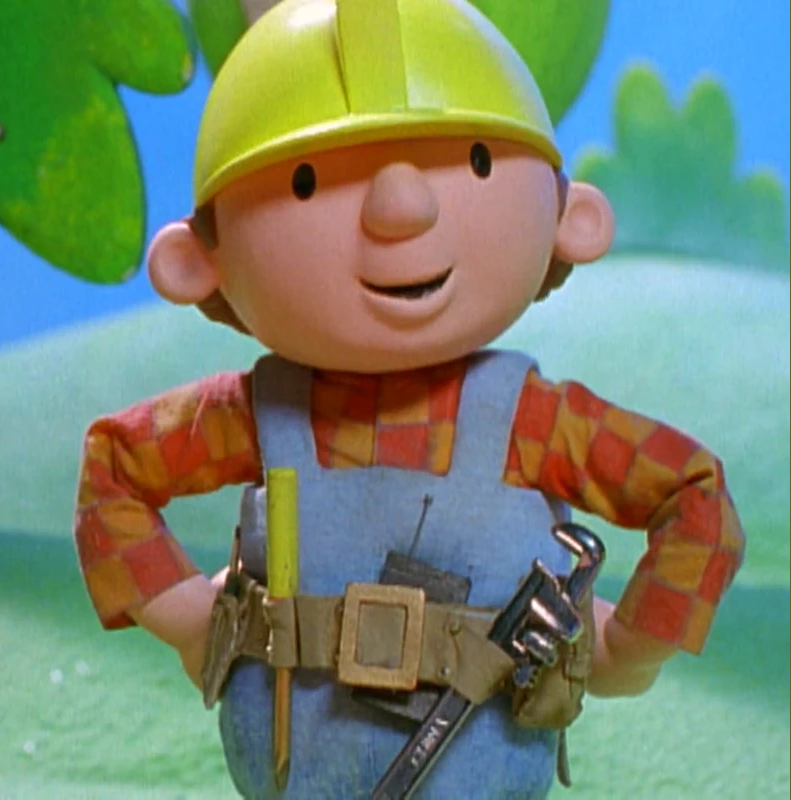

En cours de confection
Oui, on le peut !
Étudiant au 2e cycle École supérieure d'études internationales Commerce international et investissement
Mon parcours en quelques mots
Je suis étudiant au 2e cycle en commerce international et investissement depuis l'automne 2025. Je me suis intéressé à ces domaines grâce à mon parcours en économie et politique au baccalauréat à l'Université Laval. Je travaille présentement aux communications pour le ministère des Transports et de la Mobilité durable du Québec. En dehors de mes études et du travail, j'ai de nombreuses occupations, comme le tutorat en économie au Cégep de Sainte-Foy ou la création d'infrastructures technologiques qui m'aident dans mon quotidien. Ma curiosité me pousse à être autodidacte, ce qui me permet de me dépasser. Parmi mes infrastructures, un serveur personnel multiservice est ma réussite la plus aboutie à ce jour. Par ailleurs, issu d'un milieu sportif, je joue encore aujourd'hui dans une ligue compétitive de dek hockey.
Animé par une curiosité insatiable, je suis un autodidacte qui s'intéresse à de nombreux domaines, avec des niveaux d'expertise différents. Voici les six principaux :
Dans cette section, vous trouverez mon curriculum vitae. Cette version est académique : elle présente donc tous mes travaux universitaires ainsi que tous les éléments qu'exige un CV standard.

Oui, on le peut !